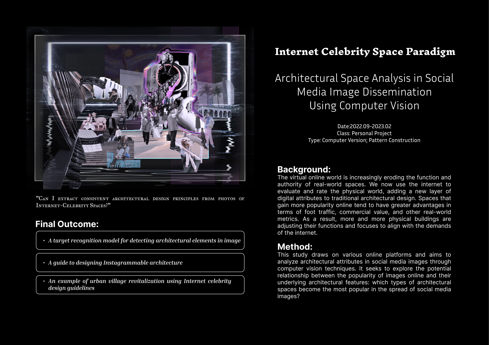

Research · 2022
Instagrammable Space
Architectural space analysis in social media image dissemination using computer vision.
Background
The virtual online world is increasingly eroding the function and authority of real-world spaces. We now use the internet to evaluate and rate the physical world, adding a new layer of digital attributes to traditional architectural design. Spaces that gain more popularity online tend to have greater advantages in terms of foot traffic, commercial value, and other real-world metrics. As a result, more and more physical buildings are adjusting their functions and focuses to align with the demands of the internet.
Method
This study draws on various online platforms and aims to analyze architectural attributes in social media images through computer vision techniques. It seeks to explore the potential relationship between the popularity of images online and their underlying architectural features: which types of architectural spaces become the most popular in the spread of social media images?
